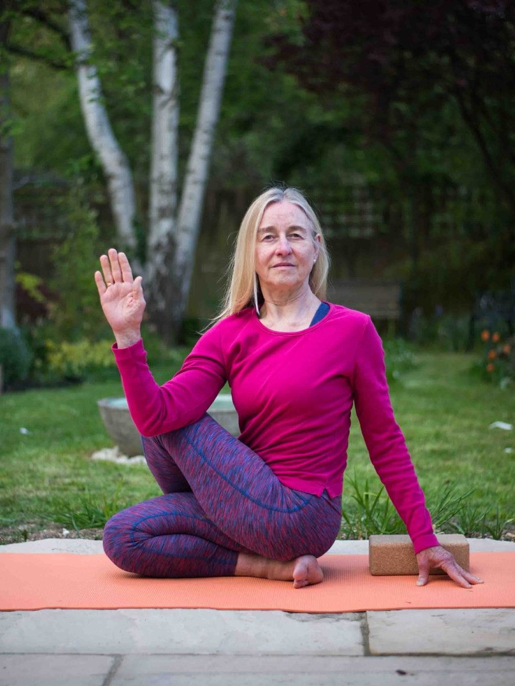

Meet Elspeth Campbell
My work has evolved through many years of professional practice, personal enquiry and a deep commitment to understanding what supports healing and human flourishing.
I am a UKCP Registered Psychotherapist with a foundation in Psychosynthesis, an Iyengar Yoga teacher certified by the Ramamani Iyengar Memorial Yoga Institute, a leadership coach and supervisor, and a member of the Association of Professional Executive Coaching and Supervision.
Over the years I have continued to deepen my therapeutic approach through advanced training with internationally recognised teachers in trauma, attachment and mind-body healing.
Book an initial sessionWhat shaped the way I work
Living and working in both developing and industrialised countries has profoundly shaped my understanding of what it means to be human.
Experiencing different cultures, beliefs and ways of being has deepened my appreciation of diversity and strengthened my capacity to work sensitively with difference, including questions of identity, sexuality, gender and relationships.
Alongside my therapeutic work, yoga and meditation have become enduring companions. Within the Iyengar yoga community and the Buddhist movements Triratna and Amaravati, I find a deep sense of belonging and spiritual friendship. These practices nourish my own life and support an embodied, mindful presence.
Together, these experiences shape an approach that is both grounded and holistic, particularly when working with trauma, identity, and the complex ways emotional experience is expressed through both mind and body.
Where my practice is accountable
What happens when we work together
My role is to accompany you as you discover your own unique direction in life, guided by your deeper Self, the inner source of wisdom.
An opportunity to pause
Psychotherapy with me offers the opportunity to stop, in a space that is calm, safe and confidential, and to let the pace slow down enough for something to be noticed.
To be listened to deeply
Being heard properly is itself part of the work. Through a compassionate therapeutic relationship it becomes possible to discover a steadier place within yourself from which change can unfold.
To make sense of your experience
Together we explore what may have become hidden through life's experiences, and reconnect with the inner wisdom that Psychosynthesis recognises in each of us.
To find your own direction
I believe that each of us carries an innate capacity for growth and healing, even when life's experiences have obscured it. The work is to let your essential nature emerge more fully.
Where wounding becomes the catalyst
Therein lies the possibility of transformation. Just as an oyster slowly forms a pearl around a grain of sand, experiences that have wounded us may with time become the very catalyst for growth and self-realisation.
The growth of your potential and the emergence of your unique spiritual presence, your Self, is the work of the soul. I am known to be someone who supports people through a deep Soul's Journey, creating the conditions in which your essential nature can emerge more fully.
How Psychosynthesis worksWhat people say about the work
Elspeth was a lifesaver from the very beginning of my therapy journey with her. I had experienced a prolonged period of stress and ill health and after working with Elspeth for a time I was able to get back on my feet and enter a new, happier phase in my life. I particularly appreciated the spiritual aspects Elspeth brought in, using meditation and poetry to calm and center myself.
Thank you for helping me become more grounded, to rediscover my spark of vitality and to claim my voice. Your approach was very well-attuned to me, and I trusted your professional judgement in deciding on what was the most appropriate style and intervention for me at different times. I benefited hugely from the variety of methods: talking, pausing, grounding, the chakras, the dolls, exploring the parts, the drawing, the different physical postures, and probably most of all, your consistent calling my attention to my feelings and sensations, balancing out my heavy reliance on thinking.
Therapy sessions with Elspeth provided a safe, nurturing space to unpack, accept and resolve past traumas, address self-destructive behaviours through identifying the drivers, build self-esteem, and develop greater emotional intelligence and spiritual awareness. Working with Elspeth has proved to be a profound and pivotal experience. I am now able to live and not simply survive.